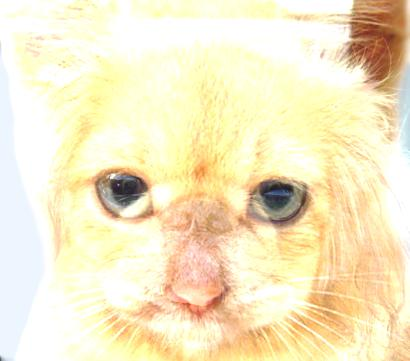
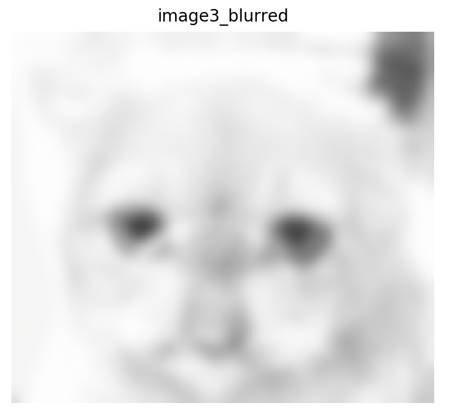

CSC 479 AU / Homework 3 / Image Filtering and Hybrid Images
Original images used for this assignment.
For this assignment, I took two images that are the same size and added them together. I followed five different functions in order to complete this assignment. The last two filters, unfortunately, do not work. However, I am working on debugging those two filters, so I hope to have those done soon. That being said, I will be submitting what I have so far. The following list is the list of the five different functions that needed to be used.
- cross_correlation_2d
- convolve_2d
- gaussian_blur_kernal_2d
- low_pass
- high_pass
How the 5 Functions Work Together
The cross correlation function turns the images into arrays. The images must become arrays because two images cannot be convolved together. The arrays have to be convolved together. So, the convolution function uses the previous correlation function. The gaussian blur of the new image was the convolved image. That is how the gaussian blur function used the convolution function. I think the gaussian blur is a low pass filter, so that is how those two are connected. And I know the high pass filter must used the low pass filter function in order work. However, my high and low pass filters do not work as of right now.
The Code that Works
This is the code that I wrote forcorrelation, convolution and gaussian blur that works and produces working outputs.
%correlation code
# correlation 2d
img1_arr = np.array(img1, dtype=float)
print(img1_arr)
img2_arr = np.array(img2, dtype=float)
print(img1_arr)
img1_arr = np.arange(150).reshape(5,10,3)
x,y,z = img1_arr.shape
indices1 = np.vstack(np.unravel_index(np.arange(x*y),(y,x))).T
np.hstack((img1_arr.reshape(x*y, z), indices1))
img2_arr = np.arange(150).reshape(5,10,3)
x,y,z = img2_arr.shape
indices2 = np.vstack(np.unravel_index(np.arange(x*y),(y,x))).T
np.hstack((img2_arr.reshape(x*y, z), indices2))
corr = signal.correlate2d(indices1, indices2, boundary='symm', mode='same')
io.imsave('correlation2d.jpg', corr)
plt.imshow(corr)
plt.show()
%convolution code
# convolution 2d
con = signal.convolve2d(indices1, indices2, boundary='symm', mode='same')
plt.imshow(con)
plt.axis('off')
plt.show()
img3 = cv2.add(img1, img2)
io.imsave('new_image.jpg', img3)
plt.figure(1, figsize=(10, 5))
plt.suptitle('2 in 1', fontsize=20, fontweight='bold')
plt.subplot(1, 1, 1)
plt.title('image3', fontsize=10)
plt.imshow(img3, cmap=plt.cm.gray)
plt.axis('off')
plt.show()
%gaussian blur code
# gaussian blur to both images
blur_img3 = ndimage.gaussian_filter(img3, 7)
plt.figure(1, figsize=(10, 5))
plt.suptitle('Gaussian Blur', fontsize=20, fontweight='bold')
plt.subplot(1, 2, 1)
plt.title('image3', fontsize=10)
plt.imshow(img3, cmap=plt.cm.gray)
plt.axis('off')
plt.subplot(1, 2, 2)
plt.title('image3_blurred', fontsize=10)
plt.imshow(blur_img3, cmap=plt.cm.gray)
plt.axis('off')
plt.show()
Results in a table


|
|   |
The top two images are the original images of the cat and the dog. The bottom left image is the convolution of the two original images. It is the hybrid of the cat and dog image. The bottom right image is the gaussian blur of the bottom left image.